Version 0.1 (release candidate). Русская версия.
Model Forge teaches a picture model something new from your own photos: a person, an object or a style. The result is a small add-on file called a LoRA. You can use it in VOXPrint AI Canvas to make new pictures of that person, object or style.
Everything happens on your computer. Your photos, the descriptions and the trained model are not uploaded anywhere.
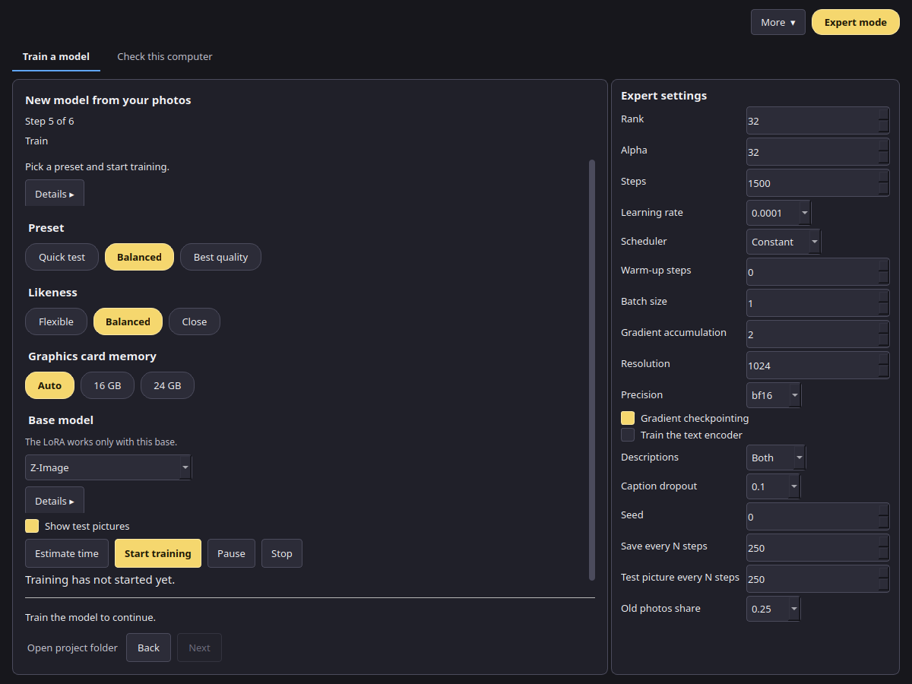
The steps are shown at the top of the window (Step 1 of 6 … Step 6 of 6): 1 Photos, 2 Subject and consent, 3 Build a set, 4 Check and prepare, 5 Train, 6 Result. Each step shows one short line. On Photos, that line names the subject you chose, and the empty drop area shows a short hint until you add pictures. On the other steps, Details ▸ opens the full explanation. Open project folder, on the same row as Back and Next, opens the folder that holds the photos, versions and test pictures.
The screenshots in this manual use a demo project with neutral placeholder pictures.
| Minimum | |
|---|---|
| System | Windows 11 24H2 or newer, 64-bit. Linux works from source (see the README). |
| Graphics card | NVIDIA with 16 GB of video memory (24 GB is faster), RTX 30-series or newer |
| Driver | A current NVIDIA driver |
| Computer memory (RAM) | 32 GB. See RAM tiers. |
| Disk | About 45 GB free: about 35 GB for the models, plus the app and your projects. With MOSS-Image Base as well, add about 27 GB. |
| Internet | Needed for the install and the first model download only |
| PowerShell | PowerShell 7 is recommended. If it is missing, the setup offers to download and install it from Microsoft. If you say no, or the install fails, the setup uses Windows PowerShell 5.1 and suggests installing PowerShell 7 later (how to install). |
VoxprintModelForgeSetup.exe and confirm the administrator prompt.C:\Program Files\VOXPrint AI Suite\Model Forge, then downloads Python and the libraries it needs. This takes a few minutes. Keep the computer online.The guide opens from Open guide in the app. PDF copies are in C:\Program Files\VOXPrint AI Suite\Model Forge\docs.
If the setup fails, it shows the path to its log: C:\Program Files\VOXPrint AI Suite\Model Forge\setup-work\install.log. Check the internet connection and run the setup again.
Open the Check this computer tab. It lists the graphics card, the computer memory, the free disk space and which models are missing. Press Manage models to download them (see Model download), then Check again.
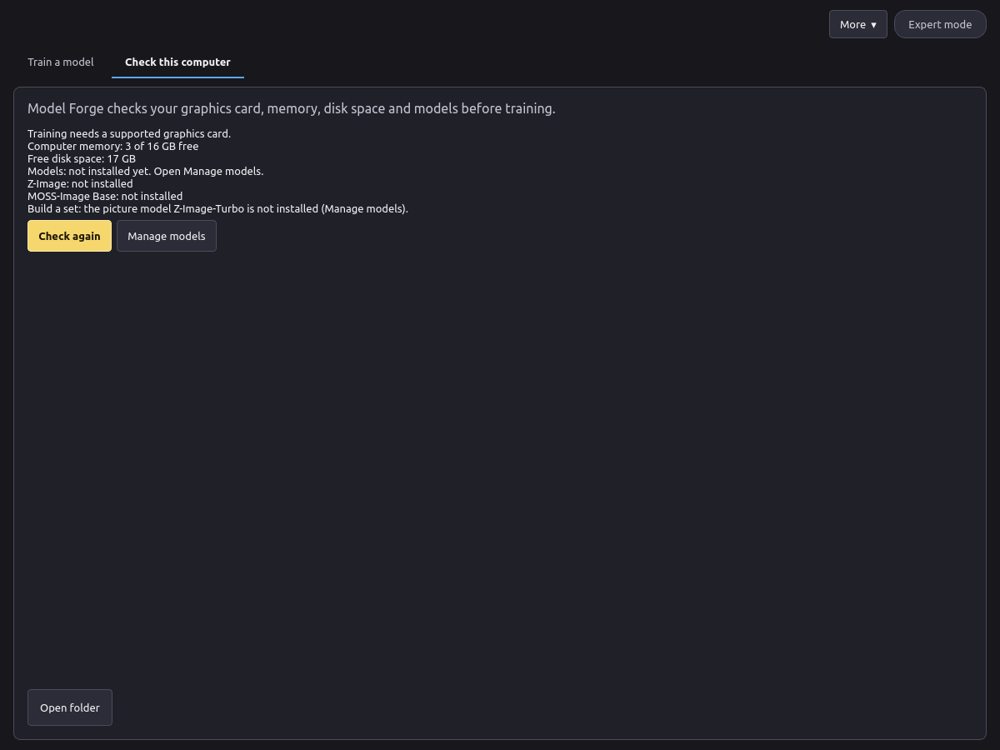
Remove the app in Settings > Apps > Installed apps. The Start menu has no Uninstall shortcut. Your projects and downloaded models stay in place. To remove them as well, see Privacy.
Model Forge needs some models before it can train. They are not inside the setup, so the setup stays small. On the first launch, open Check this computer and press Manage models. The VOXPrint model downloader (MDL) opens and downloads what is missing.
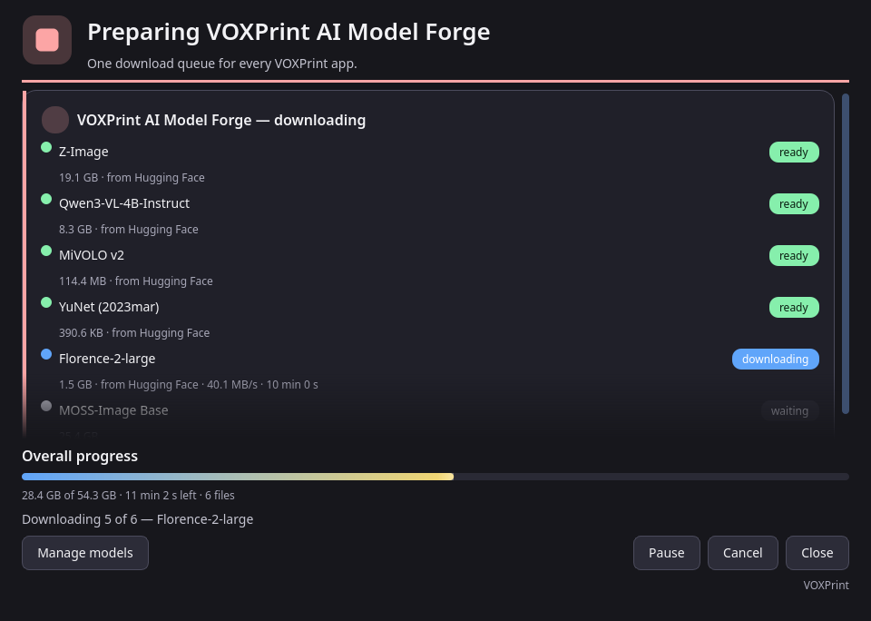
| Model | What it does | Source | Licence | Size |
|---|---|---|---|---|
| Z-Image (base) | The picture model the LoRA is trained on | Tongyi-MAI/Z-Image | Apache-2.0 | 20.5 GB |
| Qwen3-VL-4B-Instruct | Writes photo descriptions; required for preparing photos | Qwen/Qwen3-VL-4B-Instruct | Apache-2.0 | 8.9 GB |
| MiVOLO v2 | Required for preparing photos | iitolstykh/mivolo_v2 | Apache-2.0 | 0.1 GB |
| YuNet (2023mar) | Finds faces; required for preparing photos | opencv/opencv_zoo | MIT | under 1 MB |
| Florence-2-large | Backup description writer | microsoft/Florence-2-large | MIT | 1.6 GB |
| MOSS-Image Base | A second base model. Faster, and fits a 16 GB card | OpenMOSS-Team/MOSS-Image-Base | Apache-2.0 | 27.2 GB |
| Z-Image-Turbo | Draws the pictures in Build a set (optional) | Tongyi-MAI/Z-Image-Turbo | Apache-2.0 | 32.9 GB |
| DINOv2 base | Marks near-duplicate pictures in Build a set (optional) | facebook/dinov2-base | Apache-2.0 | 0.4 GB |
%LOCALAPPDATA%\VOXPrint AI Suite\models. Other VOXPrint apps use the same folder, so a model is downloaded only once.To remove a model you no longer need, open Manage models again: it lists installed models with their size and licence.
Start with More → New model. A project keeps your photos, their descriptions, the training versions and the test pictures in one folder.
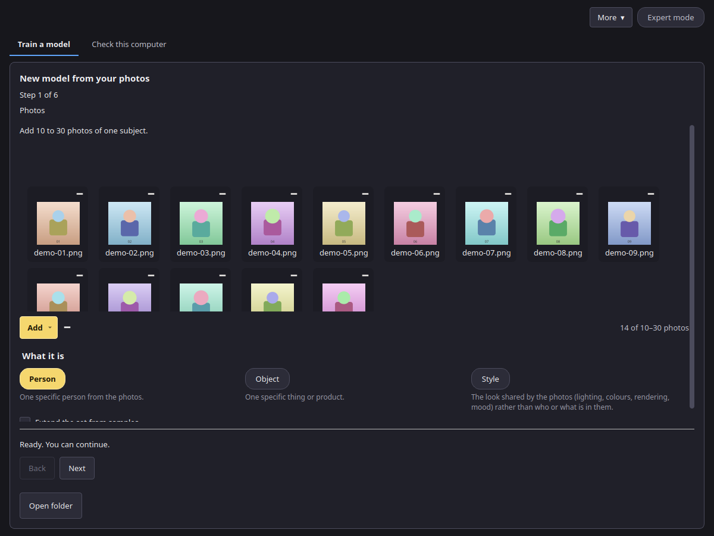
Good photos make a good model:
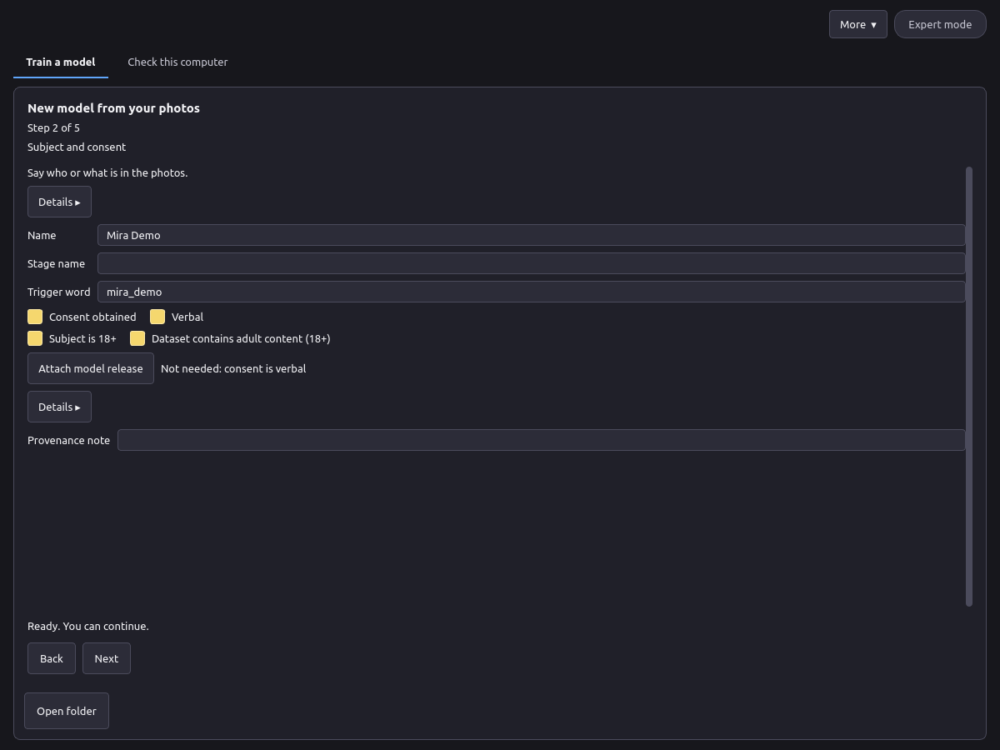
Every photo must show consenting adults, and you must have the right to use it. Some photos may be refused during preparation; replace them with other photos of the same subject.
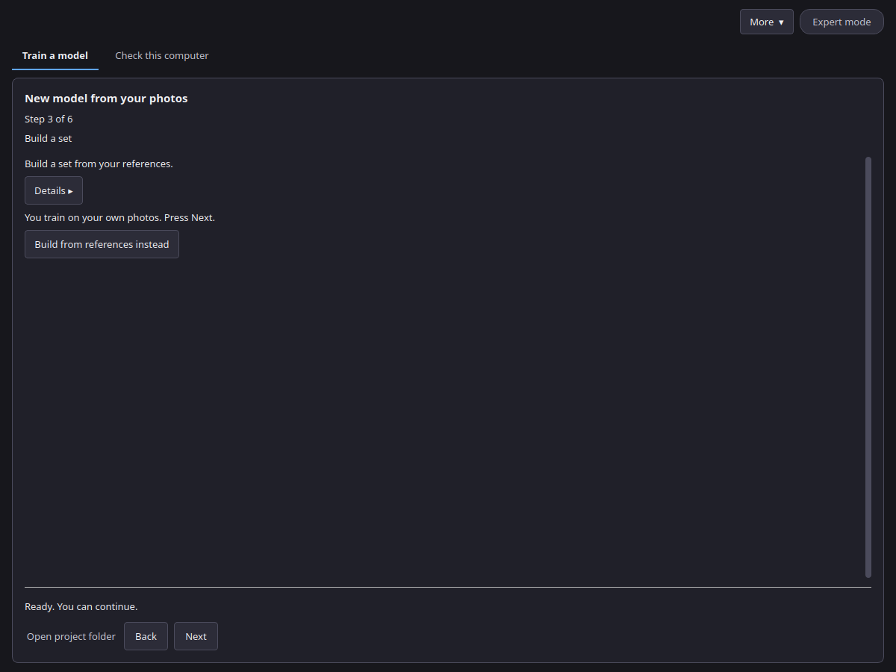
With your own photos this step only says so; press Next. Have only a few good pictures? Turn on Extend the set from samples on step 1, or press Build from references instead here, and use 1 to 10 photos of one person, one thing or one style. Then:
Simple mode draws 24 pictures per round. Expert mode shows Pictures per round, Variation strength and Steps in the Expert panel. Pictures marked ≈ very similar to another look almost the same as another one; keep only one of them. Some pictures may be refused and are not shown. Start over forgets the rounds and keeps the references.
On the Train step you choose a preset, a likeness and the graphics card memory. The app turns them into the training numbers. In Expert mode every number can be changed in the Expert panel.
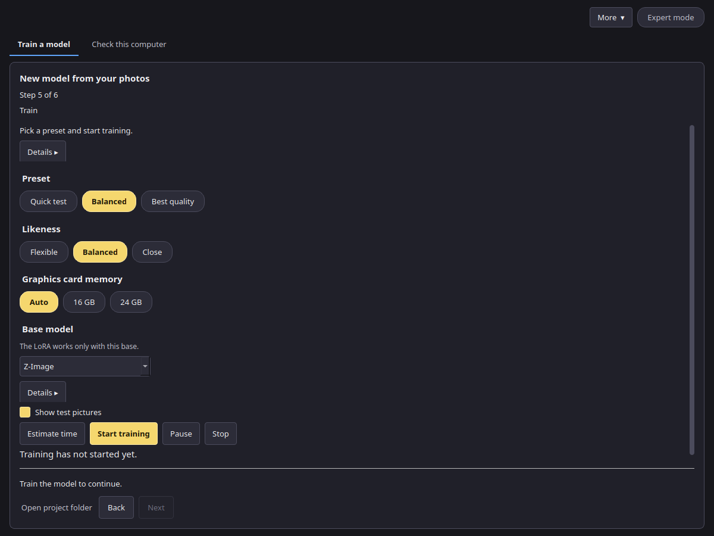
| Preset | Steps | LoRA rank | Learning rate | Picture size | Use it for |
|---|---|---|---|---|---|
| Quick check | 150 | 16 | 0.0001 | 768 px | A short run of the whole path: prepare, train, samples, finish and export |
| Balanced (recommended) | 1500 | 32 | 0.0001 | 1024 px | Most projects |
| Best quality | 3000 | 32 | 0.00008 | 1024 px | The final model, when time is not a concern |
Likeness changes the number of steps and how often a description is left out during training.
| Likeness | Steps | Use it when |
|---|---|---|
| Flexible | 0.7 × the preset | The subject should be easy to put in new scenes |
| Balanced | as the preset | Most projects |
| Close | 1.3 × the preset | The pictures should look more like your photos |
Auto reads your card: under 20 GB is the 16 GB tier, otherwise the 24 GB tier. You can also pick 16 GB or 24 GB yourself.
These come from a calibration run of the Balanced preset (1024 px, rank 32, one picture and two accumulations per step) on an RTX 4090, with its memory limited to 16 GB or 22.5 GB to stand in for each card.
| Base model | Tier | Text encoder | Time per step | Peak video memory |
|---|---|---|---|---|
| MOSS-Image Base | 16 GB | 8-bit, on the card | 4.89 s | 13.6 GB |
| MOSS-Image Base | 24 GB | full precision, on the card | 4.90 s | 18.5 GB |
| Z-Image | 16 GB | full precision | 9.7 s at 1024 px | not measured |
| Z-Image | 24 GB | full precision | 1.6 s at 1024 px, not measured | not measured |
The Z-Image 16 GB time was measured on a 16 GB RTX 4090 laptop, one picture at 1024 px. That run did not record a peak, so the card line stays 16 GB+. The 24 GB Z-Image time has not been measured. Estimate time and the first-pictures line use these seconds per step. A Balanced run on MOSS-Image Base (1500 steps) takes about 2 hours of training on such a card, plus a few minutes to load. The base model list on the Train step shows the measured peak for MOSS-Image Base; for Z-Image it shows the smallest card the presets target (16 GB+).
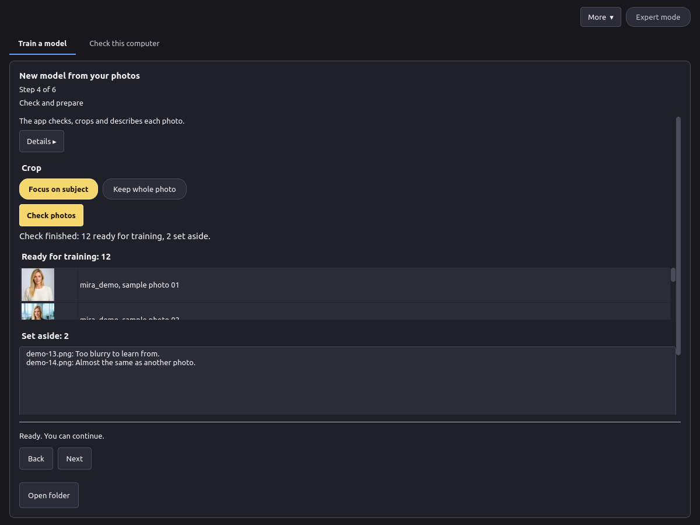
You can remove any photo before training. If too few photos are left, add more on step 1.
Choose a preset, a likeness and the graphics card memory (see Presets), and the base model:
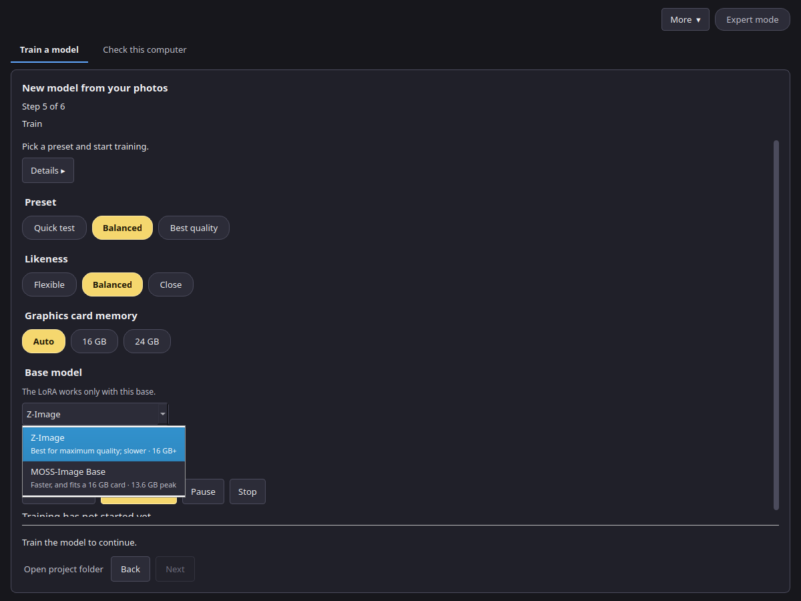
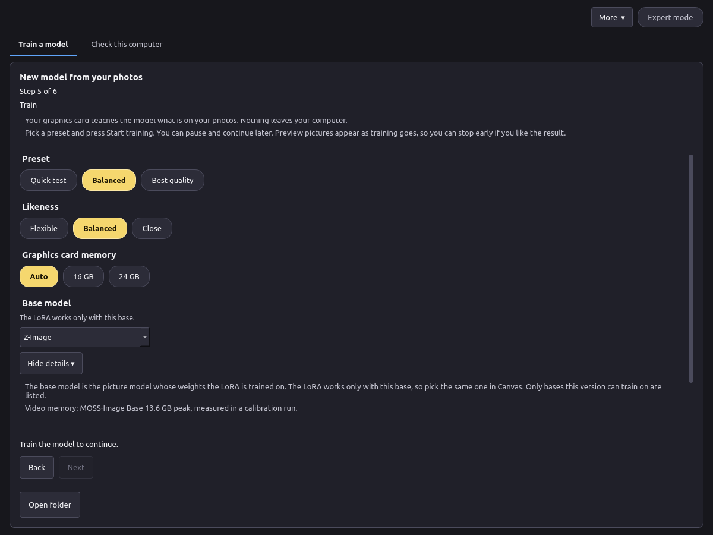
Details ▸ on this step, when review rounds are on, holds Review rounds (1 to 6, default 3) and First-round steps (100 to 500, default 120). Review rounds is how many times training pauses. First-round steps is the length of the stage before the first review. While a stage is running, Estimate time is greyed out, the same as Start training.
Press Estimate time for a forecast, then Start training. While a stage is running, the step says that training is running, and the preset, likeness, memory and base model stay locked. Start training and Estimate time are greyed out. A line shows the step out of the total, how long the stage has been running and the time left, in hours and minutes. During the first round the same line says when the first pictures will be ready: steps still to run times the measured seconds per step, plus the pictures still to draw times the seconds per picture. Until one picture has been timed, each denoising step is estimated as half a training step. Once a picture has been timed, the line also shows the seconds per picture. The bar under that line ends with the percent. The loss is under Details. Pause and Stop stay available. Stop asks before it ends the run.
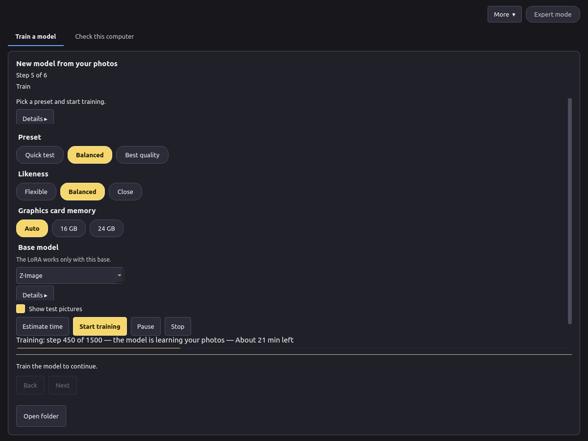
With Extend the set from samples on (Photos step), training pauses for review. Review rounds (1 to 6, default 3) is how many pauses are planned. The first stage is First-round steps (default 120, from 100 to 500). The app then draws 6 pictures at the training resolution, 28 inference steps each. Later rounds draw 8 pictures, also at 28 steps. The preset steps that remain (the preset total minus the first-round steps) are split evenly across the remaining planned rounds, and the last of those rounds takes the remainder. The preset total does not change. A single planned round is only the first-round length; the steps still left are what Just continue runs.
The heading is Check the new pictures. Your photos stay beside the new pictures. Each new picture has Include and Leave out. A picture you include gets a gold border and a check. A picture you leave out is dimmed, with a red border and a cross. A picture with no mark stays plain.
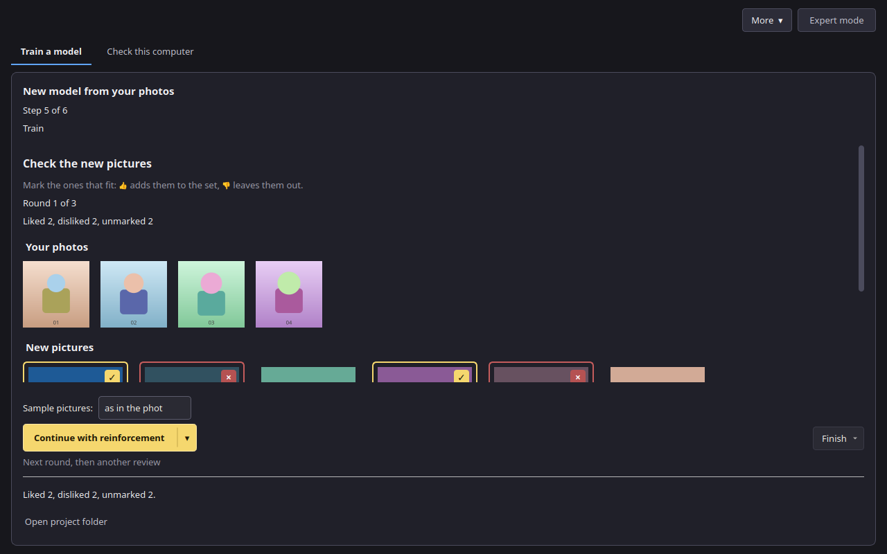
Mark all 👍 includes every new picture. Reset clears the marks. The footer counts pictures you included, pictures you left out, and pictures with no mark. Above the action row, Sample pictures offers as in the photos, clothed, or unclothed. The choice is kept in the project and applies from the next round. Each sample uses the trigger word, one framing (close-up portrait, waist-up, or full body), and one attire word. As in the photos follows the prepared captions: unclothed when any caption is marked unclothed, otherwise clothed like the photos. The list does not add clothing on its own. The action row has a large button on the left and a small Finish button on the right. Continue with reinforcement is the default. It trains the next round, then pauses for another review. The ▾ cut into its right edge switches that same button to Just continue, in a calmer colour, with a short crossfade. Just continue keeps the pictures you liked and trains the remaining steps with no more pauses. Pressing ▾ again returns to reinforcement. The choice is kept in the project. Finish opens a small menu. Save asks first and shows the steps done out of the plan, then saves the model and draws a final preview. The result is a finished LoRA you can export, labelled with the steps it got (for example, finished at 450 of 1500 steps) on the result screen, in train.json, and in the export (steps and steps_planned). Force, without saving asks first, then stops and removes the project's temporary versions and samples. Nothing is saved. Your photos stay. If any picture has no mark, Continue with reinforcement and Just continue ask you to confirm: unmarked pictures will not join the set. One short muted line under the buttons names the current main-button mode and changes when ▾ switches it. The full explanations are tooltips on the main button, ▾, Finish, and each menu item. You can finish before the last planned round. Back and Next stay hidden. Closing the app does not drop a paused review: open the project again and the same screen is there.
On the command line, lora train --review-rounds N --first-round-steps 120 --first-round-samples 6 --samples-per-round 8 --sample-steps 28 --sample-attire auto pauses the same way. --sample-attire is auto (the default), as_photos, clothed, or unclothed, and it is stored on the project. N is from 1 to 6, and the default is 3. lora review lists the pictures and sets marks (--like, --dislike, or --from-file). lora continue PROJECT trains the next round, then pauses for another review. lora continue PROJECT --unattended trains the remaining steps with no more pauses. lora finish PROJECT saves the model, draws a final preview, and records the steps it got. lora finish PROJECT --discard stops and removes temporary versions and samples; without a terminal it also needs --yes. Your photos stay. lora status prints the same first-pictures line during round 1. --review-rounds 0 trains straight through.
In Expert mode the panel on the right shows every value: Rank, Alpha, Steps, Learning rate, Scheduler, Warm-up steps, Batch size, Gradient accumulation, Resolution, Precision, Gradient checkpointing, Train the text encoder, Descriptions, Description model, Caption dropout, Seed, Save every N steps and Test picture every N steps. The reset button next to the presets puts back the values of the chosen preset.
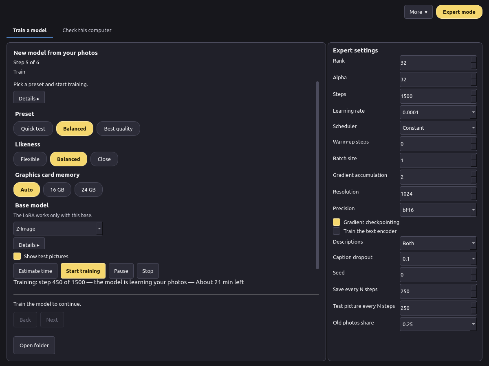
Recommended: 10 to 30 photos. Allowed in Expert: 5 to 60 photos.
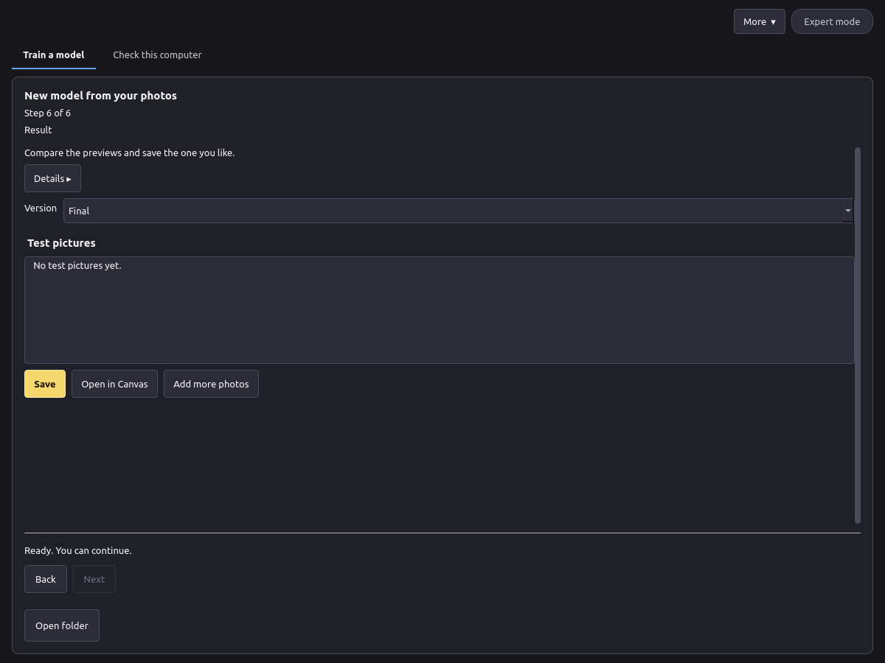
.voxlora package: the LoRA weights, a voxprint-model.json description and preview pictures. Your photos are not in it. The file name is the stage name, or the name when the stage name is empty..safetensors file with its description file (voxprint-model.json), licence and notice. You can keep it or share it under the base model's licence..safetensors file to your models. In Canvas, choose the LoRA, type the trigger word in your prompt, and set the strength (0.8 is a good start).To improve a model later, press Add more photos on this step. Training continues from the model with the new photos and a share of the old ones.
%LOCALAPPDATA%\VOXPrint AI Suite\models\user-models\lora\<name>\.%LOCALAPPDATA%\VOXPrint AI Suite\state\model-forge\lora\. More → Open project… opens an earlier project; Open project folder shows its photos, versions and test pictures.The names you entered, the trigger word, the consent and 18+ confirmations, how consent was given (verbal or file), the adult-content label, the optional provenance note, whether a release is attached and its fingerprint, and the training settings. It contains no photos, file paths, user name, computer details or photo metadata.
The same exports are available from the command line:
voxprint-forge-cli lora export <project folder> [-o <file.voxlora>]
voxprint-forge-cli lora export --project <project folder> [--checkpoint <step>] [--out <file.safetensors>] [--install-to-mdl]
The first command writes the .voxlora package (uncompressed zip): model.safetensors, voxprint-model.json and previews from samples that passed the output check. The description follows docs/schemas/voxprint-model-1.json. It records the steps done and the steps planned. --install-to-mdl applies to the second command and adds the .safetensors file to your models for Canvas. See the CLI reference.
Some model parts can run in a compressed (quantized) form that needs less video memory. Model Forge uses a compressed part only after it has been tested against the original, and the results are published here.
The text encoder turns your prompt and descriptions into numbers for the picture model. On the 16 GB tier it runs on the graphics card in 8-bit form (int8); on the 24 GB tier it runs in full precision (bf16). The picture model itself is never compressed.
Test: 8 prompts, each drawn with the full-precision encoder and with each compressed one, same seed; then the pictures were scored for how well they match the prompt (CLIP score, higher is better) and how much they differ from the full-precision picture (LPIPS, lower is closer).
| Text encoder | Video memory while encoding | Prompt match (CLIP) | Difference from full precision (LPIPS, mean) |
|---|---|---|---|
| Full precision (bf16) | 15.7 GB | 28.38 | — |
| 8-bit (int8), the 16 GB default | 8.9 GB | 28.43 | 0.134 |
| 4-bit (nf4) | 5.9 GB | 28.50 | 0.167 |
The 8-bit encoder matches the prompts as well as the full-precision one while using about half the memory, so it is the default on 16 GB cards. The 4-bit encoder also matches the prompts, but its pictures move further from the original, so it is offered only as an option.
The choice can be changed on the command line with --te-quant auto|none|int8|nf4 on lora train (auto is the tier default). See MOSS-Image.
Training was measured with the default encoder of each tier; see Presets → Measured figures.
The command-line tool also scores compressed language and picture models against their originals. These tests need an NVIDIA graphics card and are meant for advanced users:
voxprint-forge-cli kl compares compressed language models with the original: KL.voxprint-forge-cli compare compares compressed picture models with the original: Compare.VOXPrint AI Suite sorts computers into three memory tiers by the installed RAM. The tier is shared by all VOXPrint apps.
| Tier | RAM that Windows reports | Typical computer | What the suite does |
|---|---|---|---|
| 32 GB | under 44 GB | 32 GB | Models are read from disk each time they are needed and are not kept in memory. |
| 64 GB | 44 GB to under 88 GB | 48 or 64 GB | Models stay in memory between jobs, and the main ones are prepared for fast transfer to the graphics card. The next model can be loaded in advance. |
| 96 GB | 88 GB and more | 96 GB or more | All models stay in memory and are prepared for fast transfer to the graphics card. |
A computer reports a little less than its installed memory (a 32 GB computer reports about 31.7 GB), which is why the limits are below the round numbers.
By default the tier follows the installed memory. Advanced users can set it with memory.ram_mode (auto, ram32, ram64 or ram96) in the suite settings file, or with the VOXPRINT_RAM_MODE environment variable.
| What you see | What to do |
|---|---|
| "Training needs a supported graphics card" | Use a computer with an NVIDIA card with 16 GB or more and a current driver. |
| "Models: not installed yet" | Press Manage models and download the missing models. |
| Preparation does not start because models are missing | Download Qwen3-VL-4B-Instruct, MiVOLO v2 and YuNet in Manage models. |
| "Add at least N more photos" | Many photos were set aside. Add more clear photos, or use Expert mode. |
| "These photos cannot be used for training" | Some photos were refused and this project cannot continue. Start a new project with other photos of consenting adults. |
| "A PAUSE file is still in the project folder" | Press Continue in the app. If it repeats, delete the file named PAUSE in the project folder. |
| Out of video memory | Choose 16 GB under Graphics card memory, close other programs that use the graphics card, and try again. |
| Not enough disk space | Free space on the drive that holds %LOCALAPPDATA%\VOXPrint AI Suite, or remove models you no longer need in Manage models. |
| The setup failed | Read C:\Program Files\VOXPrint AI Suite\Model Forge\setup-work\install.log, check the internet connection and run the setup again. |
| Test pictures do not look like the subject | Use Close likeness or Best quality, add more varied photos, or choose a later version. |
| Every picture looks the same as the photos | Use Flexible likeness or an earlier version, and add more variety to the photos. |
Can I train on photos of someone I found online? No. Train only on consenting adults and on photos you have the right to use.
Why were some photos set aside or refused? Step 4 shows a reason for each photo that is set aside. Some photos may be refused; replace them with other photos.
Does anything leave my computer? No. Only the app libraries and the models are downloaded from the internet.
Can I use the LoRA commercially? The LoRA follows the licence of its base model. Z-Image and MOSS-Image Base are Apache-2.0. You are also responsible for the rights to the photos and the consent of the people in them.
Can I continue training later? Yes. Pause and continue, or use Add more photos on a finished model.
%LOCALAPPDATA%\VOXPrint AI Suite\state\model-forge and, if no other VOXPrint app uses them, the models in %LOCALAPPDATA%\VOXPrint AI Suite\models.| Component | Licence |
|---|---|
| VOXPrint AI Model Forge | Apache-2.0 |
| Z-Image, Z-Image-Turbo | Apache-2.0 |
| MOSS-Image Base | Apache-2.0 |
| Qwen3-VL-4B-Instruct | Apache-2.0 |
| Florence-2-large | MIT |
| MiVOLO v2 | Apache-2.0 |
| YuNet | MIT |
| DINOv2 base | Apache-2.0 |
The full licence texts come with each model and are listed in Manage models. The app's own notice is in LICENSE and NOTICE in the install folder.